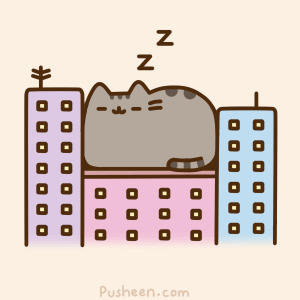

Day 86
Reading
- This week read And Another Thing... by Eoin Colfer.
- This book is from an e-library, and we have it on loan until February 10th. The email and password address for my account is in your notebook.
Math
Multiplying Fractions
- Brain Quest, p. 165 - Less and Less
- Brain Quest, p. 166 - Short Cut
- Be sure to read the Brain Box on each page.
Words of the Day
Write the two words below in your vocabulary book along with their short definitions. Also, click on the link for each word, and read more about the definition.
Writing
Write a long paragraph on the following topic: Do you think you would enjoy being famous? Why or why not?
Art
- This week, you'll draw a city street using one-point perspective.
- Watch the tutorial video.
Day 87
Reading / Comprehension
- Continue reading And Another Thing... by Eoin Colfer.
- Brain Quest, pp. 64-5: Chronological Order vs. Comparing and Contrasting
- Be sure to read the Brain Box on p. 64.
Reading Review: Fact or Fiction
- A fact is something that can be proven to be true.
- An opinion states what someone thinks, feels, or believes.
- Brain Quest, p. 63 - Pink Lake (Fact or opinion)
- Be sure to read the Brain Box on this page.
Words of the Day:
Write the two words below in your vocabulary book along with their short definitions. Also, click on the link for each word, and read more about the definition.
- concoction - the act of creating something by compounding or mixing
- conspicuous - obvious to the eye or mind
Math
Dividing Fractions
- Brain Quest, p. 167 - Flip It
- Brain Quest, p. 168 - High Divide
- Brain Quest, p. 169 - The Great Divide
- Be sure to read the Brain Box on each page.
Science
- Learn about different sources of energy and using energy responsibly: video
- In your science book, read Chapter 17: Electrical Energy Resources, pp. 175-180.
- Answer the questions on p. 181, and check your answers against those on p. 182.
Day 88
Reading
- Continue reading And Another Thing... by Eoin Colfer.
- Read this short story, and answer the questions: Jacob the Great
- You may skip questions 18 and 19, which we have not covered.
- When you are finished, check your answers here.
Words of the Day:
Write the two words below in your vocabulary book along with their short definitions. Also, click on the link for each word, and read more about the definition.
- contortion - a tortuous and twisted shape or position
- counter - a calculator recording the number of times something happens
Math
- Multiplying fractions: worksheet # 1-7 only
- Dividing fractions: worksheet # 1-5 only
- Multiplying and dividing with fractions - word problems: worksheet
History / Social Studies
- Read this summary on the US legislative branch, which is known as Congress.
- Take the ten question quiz on the US legislative branch.
Day 89
Reading / Grammar
Words of the Day
Write the two words below in your vocabulary book along with their short definitions. Also, click on the link for each word, and read more about the definition.
- cunning - showing inventiveness and skill
- debris - the remains of something that has been destroyed
Math
- Multiplying fractions: worksheet # 8-14 only
- Dividing fractions: worksheet # 6-10 only
- Review problems
Day 90
Math / English: Mid-Term Exam
You've reached the end of the first half of the year!
- Math Section
- Exam
- Remember to show all your work!
- English Section
- Complete the first part on thatquiz: Exam - Part 1
- Exam - Part II: hard copy only